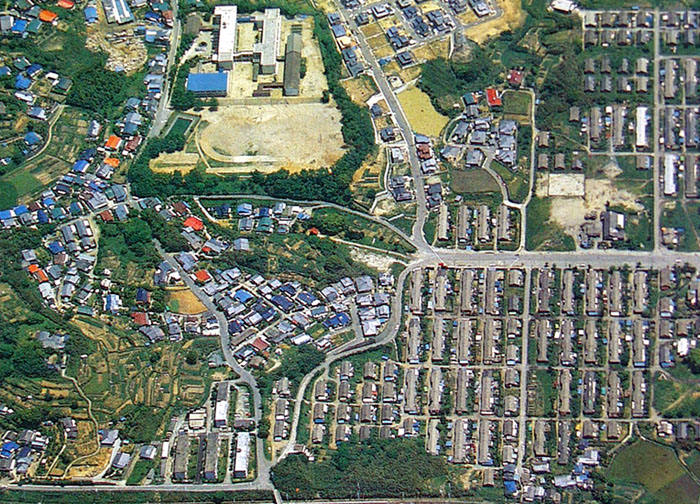

三井鉱山臼井社宅
臼井社宅は、福岡県大牟田市臼井新町１丁目および臼井新町２丁目に所在していた。 平屋５戸建てが主流で、平成10年12月頃から解体が始まり、現在は荒れ果てた空き地となっている。
福岡県大牟田市による昭和35年10月1日現在「町別世帯数人口および戸数一覧」によると、
駛馬（はやめ）南校区
臼井新町１丁目 世帯数234 人口1191（男611、女580） 戸数243
臼井新町２丁目 世帯数321 人口1566（男739、女827） 戸数344
とある。
平成１６年１０月１日現在にあっては、
臼井新町１丁目 世帯数68 人口173（男89、女84）
臼井新町２丁目 世帯数23 人口 62（男31、女31）
であり、炭鉱閉山の影響が如何に大きかったか、数字が物語っていると言えよう。

（昭和58年臼井社宅航空写真より・陽ちゃん提供）
BACK
NEXT